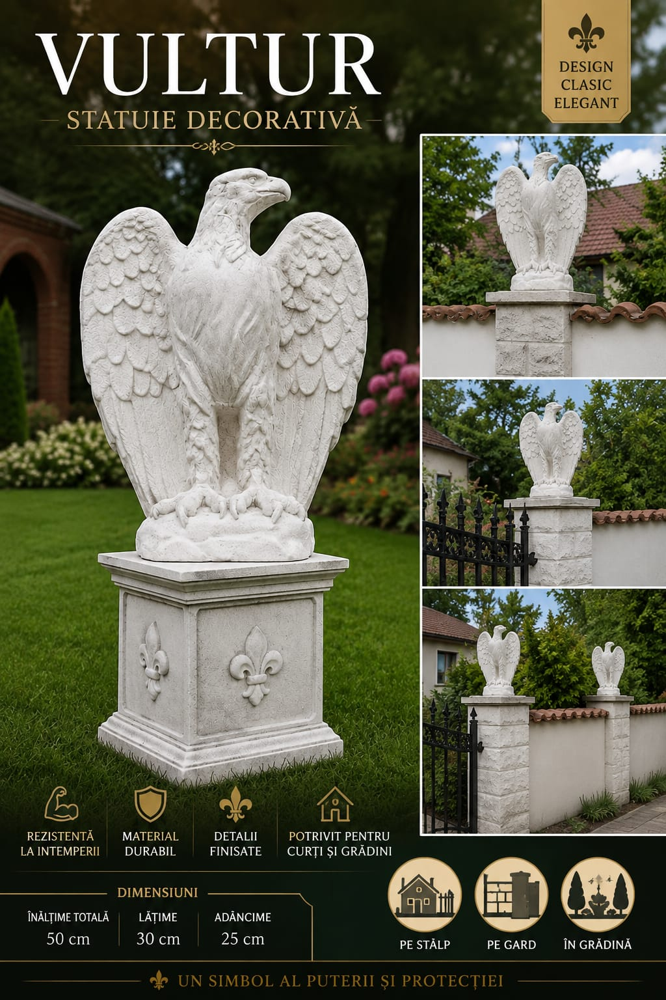
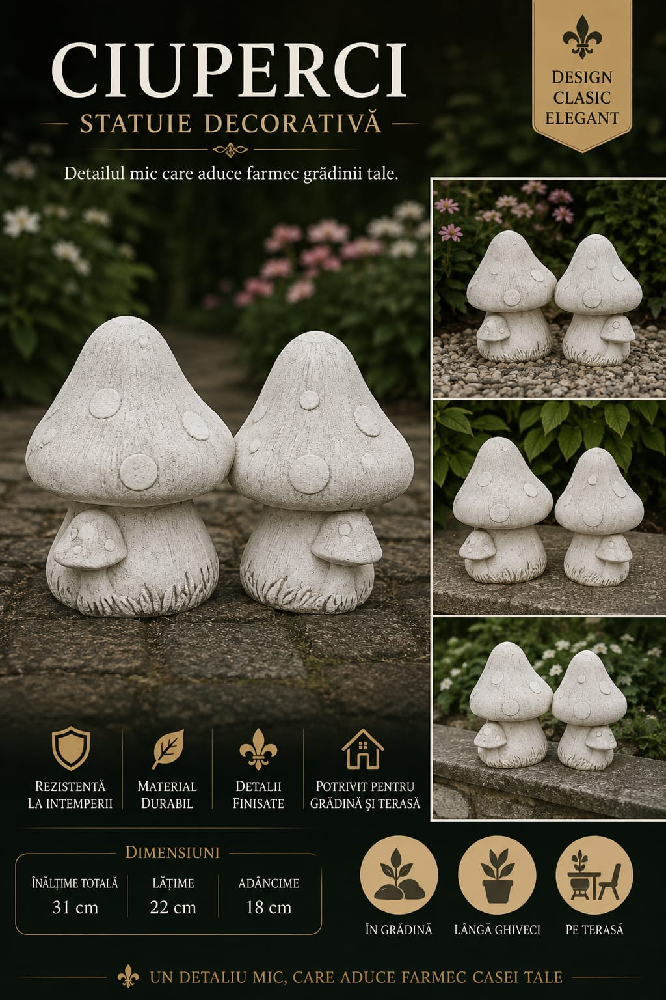
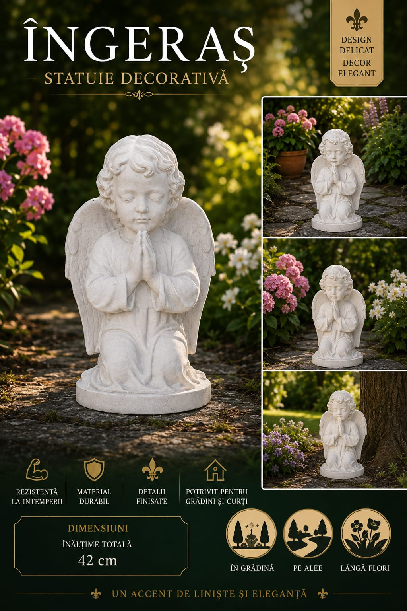
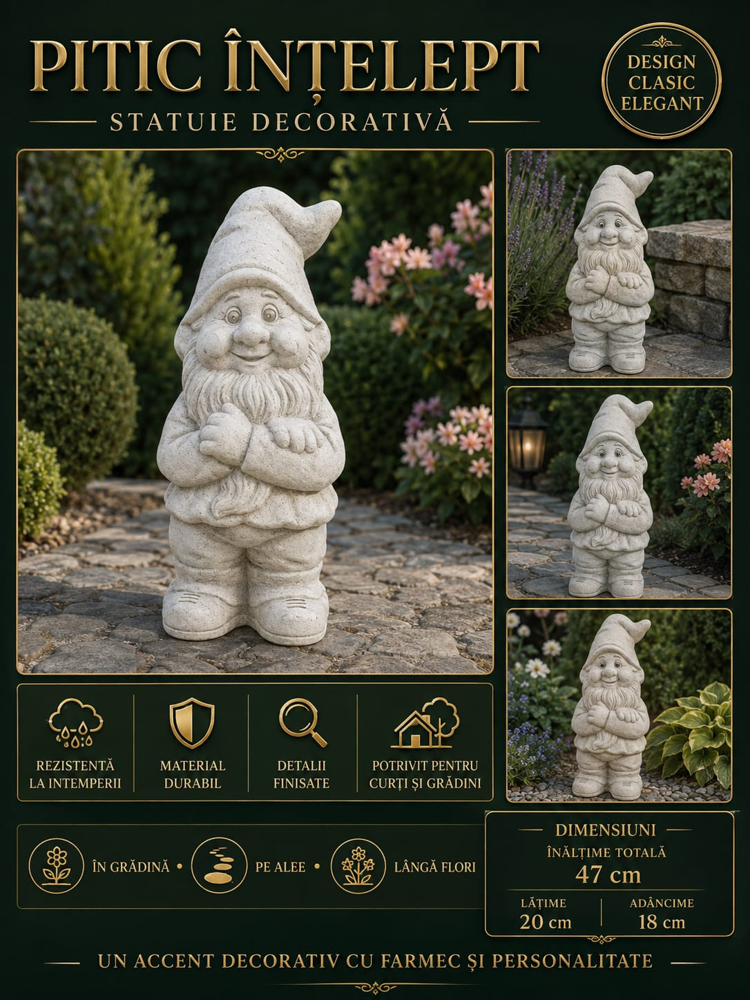
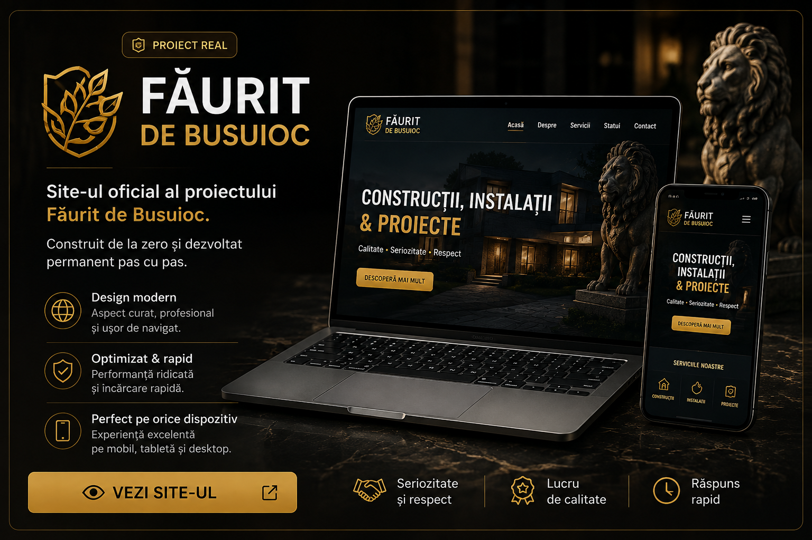

Idei transformate în proiecte reale.
Sunt Andrei Busuioc, iar Făurit de Busuioc este locul unde adun proiectele pe care le construiesc, creez și dezvolt — de la lucrări practice și produse decorative până la site-uri web și proiecte AI.
Colecția Făurit de Busuioc
Modele decorative pentru curți, grădini și exterior. Pe măsură ce finalizez modele noi, le voi adăuga aici.






Web & Inteligență Artificială
Proiecte digitale, site-uri și soluții dezvoltate pas cu pas. Zona aceasta va crește odată cu proiectele noi.

PROIECT REALFăurit de Busuioc
Site-ul oficial al proiectului Făurit de Busuioc, construit de la zero și dezvoltat permanent.
 WEB
WEB
Site-uri Web
Pagini de prezentare, portofolii și site-uri simple pentru persoane, meseriași și proiecte aflate la început.
 AI
AI
Proiecte cu Inteligență Artificială
Concepte, imagini, texte, idei de promovare, automatizări și proiecte dezvoltate cu ajutorul AI.
Băi • Gresie & Faianță
Lucrări de amenajare băi, montaj gresie și faianță, surprinse în diferite etape ale proiectului.


.jpeg)
.jpeg)
.jpeg)
.jpeg)
Făurit de Busuioc
Făurit de Busuioc este proiectul personal al lui Andrei Busuioc, construit în jurul ideii de a transforma ideile în lucruri reale.
Portofoliul va crește în timp, pe măsură ce apar lucrări, produse și proiecte noi.
Ai un proiect sau o idee?
Pentru lucrări, statui, colaborări sau proiecte digitale, mă poți contacta direct.